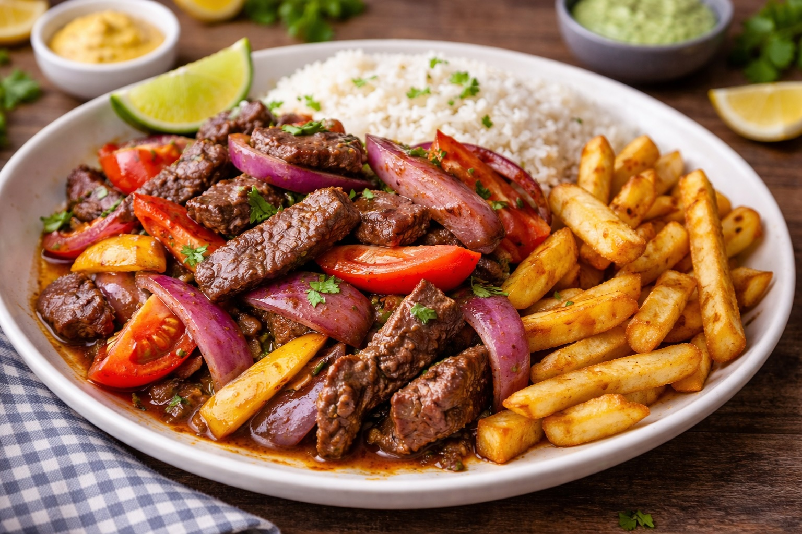

Whole Foods Recipes: Lomo Saltado
Last updated: March 31, 2026

A whole-food version of Peruvian lomo saltado built around beef, red onion, tomato, garlic, soy sauce, and simple real ingredients. This recipe focuses on strong flavor, high-heat cooking, and practical workflow rather than restaurant theatrics.
- Lomo saltado is a fast dish: prep matters because once cooking starts, everything moves quickly.
- High heat is essential: this dish depends on quick searing, not slow cooking.
- The onion and tomato should stay alive: they should soften slightly but still keep structure.
- Simple ingredients carry the flavor: beef, garlic, soy sauce, vinegar, onion, and tomato do most of the work.
Purpose
Lomo saltado is one of the best examples of how a few strong ingredients can create a complete and memorable meal. It is fast, savory, slightly acidic, and deeply satisfying. Unlike a stew such as seco de res, this dish depends on speed, timing, and heat.
This version aims to keep the spirit of the dish while fitting naturally into a whole-food kitchen. It avoids overcomplication and focuses on good ingredients, clean prep, and high-heat execution.
Ingredients
For the lomo saltado
- 1½ lbs beef sirloin or similar tender beef, cut into thick strips
- 1 large red onion, cut into thick wedges
- 1 large tomato, cut into wedges
- 3 to 4 cloves garlic, minced
- 5 tbsp soy sauce
- 1.5 tbsp red wine vinegar
- 2 tbsp avocado oil
- Salt to taste
- Optional: chopped cilantro for finish
For serving
- Cooked white rice
- French fries
Equipment
- Large skillet, cast iron pan, or wok-style pan
- Knife and cutting board
- Small bowl for sauce mixture
- Rice pot or saucepan if making fresh rice
Preparation
Cut the beef, onion, and tomatoes before heating the pan. Mince the garlic and, if using it, prepare a very small amount of ginger. Mix the soy sauce and vinegar in a small bowl so it is ready to go. If serving with rice and fries, have those either ready or already in progress before the beef hits the pan.
This dish rewards preparation more than almost any other recipe in the system. Once the cooking starts, there is very little time to stop and catch up.
Method
- Heat the pan over high heat until very hot.
- Add oil and sear the beef quickly in batches so it cooks instead of steaming. Remove and set aside.
- Add the garlic and optional ginger and cook just until fragrant.
- Add the red onion and cook briefly so it softens slightly but still keeps structure.
- Add the tomatoes and toss quickly. They should warm and soften slightly, not collapse completely.
- Return the beef to the pan.
- Add the soy sauce and vinegar mixture and toss everything together over high heat for a short final finish.
- Adjust salt as needed, keeping in mind that soy sauce already brings salt.
- Serve immediately with white rice and fries.
Total time
- Prep time: about 20 minutes
- Cook time: about 10 to 15 minutes
- Total: about 30 to 35 minutes, plus fry time if making fries from scratch
Why this dish is different from seco de res
Seco de res is about patience and slow concentration. Lomo saltado is about speed and heat. The goal is not fully softened vegetables or a long-developed sauce. The goal is a quick, intense finish where the beef stays juicy and the vegetables keep some life.
Ingredient notes
- Beef: use a tender cut because the cooking time is short.
- Red onion: thick cuts hold up better and keep the right texture.
- Tomato: add them near the end so they do not dissolve.
- Garlic: garlic brings depth and fits naturally with the whole-food kitchen approach.
Notes
- Do not overcrowd the pan: the beef needs room to cook.
- Prep first: this recipe moves too fast for mid-cook chopping.
- Keep the vegetables alive: onion and tomato should not turn into stew.
- Rice helps balance the plate: it absorbs the sauce and rounds out the meal.
- Fries can stay flexible: homemade is ideal, but oven fries can work.
Personal note
Lomo saltado is a natural next recipe after seco de res because it develops a different skill: high-heat execution instead of slow braising. It fits well into a practical kitchen system because the ingredients are familiar, the cook time is short, and the reward is high when the timing is right.
This version is meant to create a solid home baseline that can be refined after real execution.
Next steps
Continue with more Whole Food Cooking.
This article focuses on general food quality and cooking with quality ingredients, not medical advice.